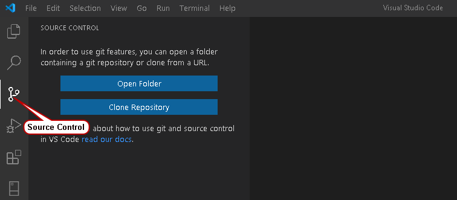

A. Repository mit Visual Studio Code klonen
Wenn du Visual Studio Code verwendest, kannst du ein GitHub-Repository direkt über die Benutzeroberfläche von VS Code klonen. Befolge diese Schritte:
- Öffne Visual Studio Code und gehe zum gewünschten Speicherort, an dem das Repository geklont werden soll.
- Gehe zum Menü "View" (Ansicht) und wähle "Command Palette" (Befehlspalette) oder verwende die Tastenkombination "Strg+Shift+P" (Windows/Linux) oder "Cmd+Shift+P" (Mac).
- Gib in der Befehlspalette "Git: Clone" (Git: Klonen) ein und wähle die entsprechende Option aus.
- Gib die URL des zu klonenden Repositorys ein. Diese findest du auf der GitHub-Website unter dem Button "Code" (Code).
- Wähle den gewünschten Speicherort aus und klicke auf "Clone" (Klonen).
- Visual Studio Code wird das Repository klonen und im ausgewählten Speicherort öffnen.
